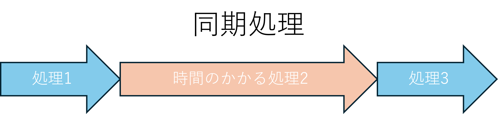
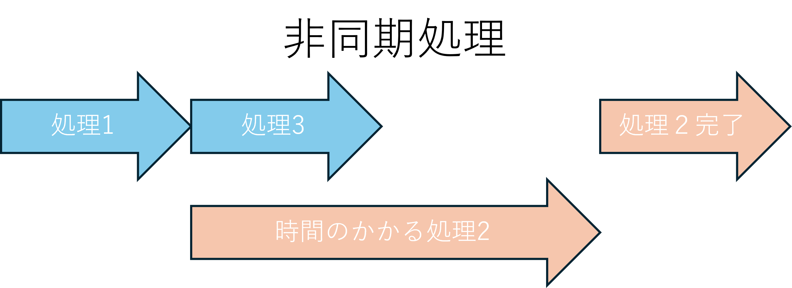
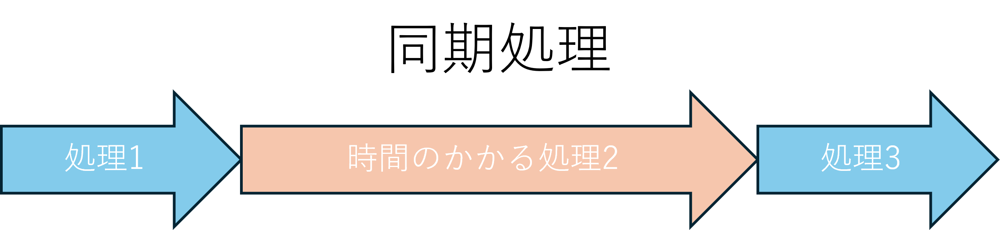
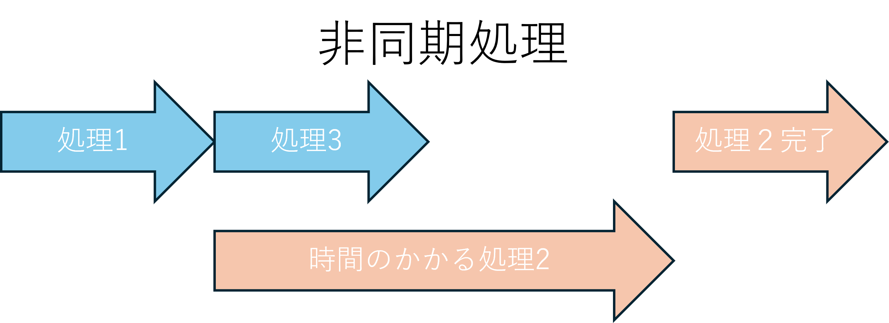

非同期処理とは
Javascriptは基本的にシングルスレッドの同期処理を行うため長時間かかる処理を実行すると、その間その他の動作・操作を受け付けなくなってしまう。或いは、実行が完了してもその結果が返ってくるのに時間がかかる処理を実行すると、その後帰ってきた結果を使おうとしても、まだその処理が完了していないため、意図したタイミングで正しい値を得ることができず、バグや予期せぬ挙動の原因となってしまう。
こうした問題を避けるために、「非同期処理（Asynchronous processing）」が重要となる。非同期処理を用いることで、処理の完了を待たずに次の処理を進めたり、結果が返ってきたタイミングで処理を実行することが可能になる。これにより、ユーザーの操作や画面の応答性を損なうことなく、効率的なプログラムの実行が可能となる。  
Javascriptは基本的にシングルスレッドの同期処理を行うため長時間かかる処理を実行すると、その間その他の動作・操作を受け付けなくなってしまう。或いは、実行が完了してもその結果が返ってくるのに時間がかかる処理を実行すると、その後帰ってきた結果を使おうとしても、まだその処理が完了していないため、意図したタイミングで正しい値を得ることができず、バグや予期せぬ挙動の原因となってしまう。
こうした問題を避けるために、「非同期処理（Asynchronous processing）」が重要となる。非同期処理を用いることで、処理の完了を待たずに次の処理を進めたり、結果が返ってきたタイミングで処理を実行することが可能になる。これにより、ユーザーの操作や画面の応答性を損なうことなく、効率的なプログラムの実行が可能となる。  
async/await
asyncとawaitはES2017で導入された文法であり、非同期処理を簡潔かつ直感的に記述するための構文である。 asyncを関数の宣言に付けると、その関数は常にPromiseを返す関数となる。関数の内部では、awaitを使ってPromiseが解決されるのを一時的に待つことができ、その結果を変数として受け取ることができる。これにより、非同期処理をまるで同期処理のような形で書くことが可能となる。 以下に例を示す。
asyncとawaitはES2017で導入された文法であり、非同期処理を簡潔かつ直感的に記述するための構文である。 asyncを関数の宣言に付けると、その関数は常にPromiseを返す関数となる。関数の内部では、awaitを使ってPromiseが解決されるのを一時的に待つことができ、その結果を変数として受け取ることができる。これにより、非同期処理をまるで同期処理のような形で書くことが可能となる。 以下に例を示す。
async function getData() {
const response = await fetch("https://example.com/api/data");
const data = await response.json();
console.log(data);
}
Promise
Promiseは、非同期処理の成功・失敗を一つのオブジェクトとして表現する仕組みである。new Promiseを用いることで、開発者自身が非同期処理の制御構造を定義できる。 Promiseには3つの状態が存在する。初期状態は「保留（pending）」であり、処理が成功すると「解決（fulfilled）」、失敗すると「拒否（rejected）」となる。これらの状態に応じて、.then()や.catch()を用いて後続処理を記述する。 以下に、1秒後に完了する非同期処理を定義する例を示す。
Promiseは、非同期処理の成功・失敗を一つのオブジェクトとして表現する仕組みである。new Promiseを用いることで、開発者自身が非同期処理の制御構造を定義できる。 Promiseには3つの状態が存在する。初期状態は「保留（pending）」であり、処理が成功すると「解決（fulfilled）」、失敗すると「拒否（rejected）」となる。これらの状態に応じて、.then()や.catch()を用いて後続処理を記述する。 以下に、1秒後に完了する非同期処理を定義する例を示す。
function waitOneSecond() {
return new Promise((resolve, reject) => {
setTimeout(() => {
resolve("1秒経過した");
}, 1000);
});
}
waitOneSecond()
.then(message => {
console.log(message);
})
.catch(error => {
console.error("エラー:", error);
});
resolve()を呼び出せば成功とみなされ、reject()を呼び出せば失敗とみなされるため以下のように、任意に成功・失敗を定義することもできる。
await new Promise((resolve, reject) => {
if (条件) {
resolve();
} else {
reject();
console.error("エラーが発生しました");
}
});
try-catch文
非同期処理を扱う上で避けて通れないのが、エラーハンドリングである。通信エラーや不正なレスポンスなど、非同期処理には失敗がつきものであり、それらを適切に処理する必要がある。 特にasync / awaitと組み合わせた場合、try-catch構文を用いることで、非同期処理内のエラーを同期処理と同様の形で扱うことができる。 以下にその例を示す。
非同期処理を扱う上で避けて通れないのが、エラーハンドリングである。通信エラーや不正なレスポンスなど、非同期処理には失敗がつきものであり、それらを適切に処理する必要がある。 特にasync / awaitと組み合わせた場合、try-catch構文を用いることで、非同期処理内のエラーを同期処理と同様の形で扱うことができる。 以下にその例を示す。
async function fetchData() {
try {
const response = await fetch("https://example.com/api/data");
const data = await response.json();
console.log("取得したデータ:", data);
} catch (error) {
console.error("データの取得に失敗:", error);
}
}
API実装例
javascriptでopenweatherから天気を取得するコード例を示す。但し、APIキーは各自取得すること。
javascriptでopenweatherから天気を取得するコード例を示す。但し、APIキーは各自取得すること。